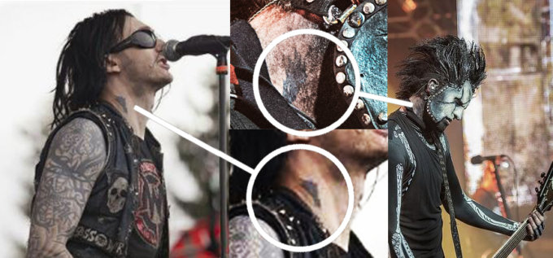
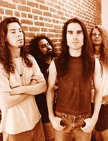
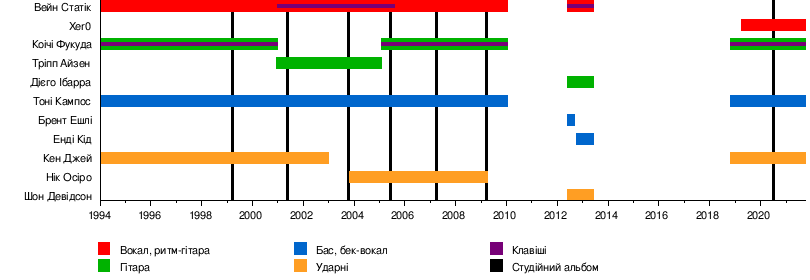

Групу заснував Вейн Статік та барабанщик Кен Джей. Група здобула популярність дебютним альбомом «Wisconsin Death Trip», який вийшов в 1999 році, в якому їх індастріал-метал привернув увагу в зростаючому індастріал-метал русі наприкінці 1990-х, і альбом з часом став платиновим у Сполучених Штатах.[1] Протягом наступного десятиліття група випустила ще п'ять альбомів: «Machine» у 2001 році, «Shadow Zone» у 2003 році, «Start a War» у 2005 році, «Cannibal» у 2007 році та «Cult of Static» у 2009 році.
Група призупинила діяльність, коли Статік працював над своїм сольним альбомом «Pighammer» у 2011 році. Статік на короткий час реформував групу у 2012 році, долучивши лише учасників зі свого сольного альбому, і в червні 2013 року гурт знову призупинив діяльність. 1 листопада 2014 року Вейн Статік помер у віці 48 років.
Решта оригінального складу групи: басист Тоні Кампос, гітарист Коічі Фукуда та барабанщик Кен Джей оголосили 23 жовтня 2018 року, що вони реформують групу на честь Статіка, і випустять «Project Regeneration Vol. 1» у 2020 році, це їх перший студійний альбом за одинадцять років.[2] Незабаром, має вийти ще один альбом Project Regeneration Vol.2. Дата виходу досі невідома.
Зміст
Історія
Створення гурту, Wisconsin Death Trip і Machine (1994–2001)

Гурт був заснований у 1994 році після розпаду попереднього гурту Вейна Статіка Deep Blue Dream. Наприкінці 1980-х Статік грав у гурті разом із майбутнім фронтменом Smashing Pumpkins Біллі Корганом. [3] Однак, коли Smashing Pumpkins почали набирати популярність, Корган вирішив присвятити всю свою увагу новому гурту, і Deep Blue Dream врешті-решт розпалися. [4] Пізніше Статік і Кен Джей переїхали до Лос-Анджелеса, щоб заснувати новий гурт з гітаристом Емерсоном Свінфордом, з яким вони познайомилися через спільного друга, чиказького автора-виконавця пісень Пі Джея Олссона. Вони створили гурт під назвою Drill, [5] до складу якого увійшов Тоні Кампос на бас-гітарі, і почали виступати на музичній сцені Лос-Анджелеса. Після того, як Свінфорд пішов, щоб продовжити гастролі та сесійну роботу, вони найняли гітариста Коїчі Фукуду і перейменували гурт на Static. Під час запису свого дебютного альбому, вони зрозуміли, що існує безліч інших гуртів з назвою Static, і згодом перейменували гурт на Static-X. [6] [7]
Static-X підписали контракт з Warner Bros. Records на початку 1998 року і випустили свій дебютний альбом «Wisconsin Death Trip» 23 березня 1999 року. Незабаром після цього вони випустили свій перший сингл «Push It», за яким послідували «I'm with Stupid» і «Bled for Days» у 2000 році. [8] Static-X гастролювали виключно на підтримку альбому і двічі виступали на Ozzfest, підтримуючи Fear Factory. Наступного року було також випущено промо-міні-альбом «The Death Trip Continues».

Це був просто вихор, і я майже нічого не пам'ятаю. Ми так багато працювали і гастролювали, що я навіть не пам'ятаю більшу частину цього. За перший рік ми відіграли 300 концертів і просто ніколи не поверталися додому. Один тур тривав шість або вісім тижнів і закінчувався десь на східному узбережжі, ми їхали пару днів, приєднувалися до Slayer і гастролювали з ними чотири або п'ять тижнів. Тур закінчувався, а потім ми їхали на кілька днів до Бостона, щоб зіграти з Sevendust. Ми просто продовжували їхати і їхати і ніколи не поверталися додому. Я маю на увазі, що у мене навіть не було дому. Останній рік перед тим, як ми почали гастролювати, я жив у приміщенні для репетицій. Мені довелося звільнитися з роботи, щоб записати альбом, так що мені навіть не було куди повертатися додому... Зараз я озираюся назад і шкодую, що не знайшов часу, щоб розслабитися і оцінити все це більше. Можливо, познайомитися з деякими іншими гуртами трохи ближче і провести час, повеселитися на вечірках і, можливо, зробити кілька фотографій з іншими хлопцями".
Комерційно зусилля окупилися: альбом став платиновим у 2001 році. [10] Подальший тур був задокументований на DVD «Where the hell are we and What Day Is It... This Is Static-X» (Де ми, чорт забирай, знаходимося і який сьогодні день... Це Static-X). Однак тиск запису нового альбому був важким для Статіка і решти гурту. Статік, побоюючись, що вони не зможуть випустити ще один успішний альбом, хотів почати роботу над наступним матеріалом під час гастролей на підтримку Wisconsin Death Trip, в той час як інші учасники гурту хотіли зосередитися на тому, щоб насолоджуватися гастролями.[11] Не маючи підтримки, Статік взяв справу в свої руки, написавши весь матеріал самостійно протягом двох років гастролей. [11] Це викликало суперечки між членами гурту, які обурювалися, що Вейн не чекав на них і не включав їх у процес створення альбому, в якому всі учасники брали участь у попередньому альбомі. Фукуда покинув гурт після завершення туру, що змусило гурт записати альбом у складі трьох учасників. [12] Пізніше Вейн описував цей розкол як "дружній" і "безумовно не [...] дружній". Незважаючи на це, гурту все ж вдалося досягти успіху: другий альбом, Machine, вийшов 22 травня 2001 року і згодом був сертифікований як золотий з накладом у 500 000 проданих копій. [13] Тріпп Айзен замінив Фукуду на гітарі під час туру на підтримку альбому. [11]
Shadow Zone і Start a War (2003–2005)
Cannibal and Cult of Static (2007–2009)
Перерва, розрив і смерть Вейна Статика (2010–2017)
Возз'єднання і Project: Regeneration (2018–дотепер)
Цей розділ потребує доповнення.
Склад
Поточний склад
- Тоні Кампос — бас, бек-вокал (1994—2010, 2018-по теперішній час)
- Коічі Фукуда — гітара, клавішні (1994—2000, 2005—2010, 2018-по теперішній час)
- Кен Джей — ударні (1994—2003, 2018-по теперішній час)
- Xer0 — вокал, ритм-гітара (2019-по теперішній час)
Колишні учасники
- Вейн Статік — вокал, ритм-гітара (1994—2010, 2012—2013); клавіші (2001—2005, 2012—2013) (помер 2014)
- Тріпп Айзен — соло-гітара (2000—2005)
- Нік Осіро — ударні (2003—2009)
- Брент Ешлі — бас, бек-вокал (2012)
- Енді Кід — бас, бек-вокал (2012—2013)
- Дієго Ібарра — соло-гітара (2012—2013)
- Шон Девідсон — ударні (2012—2013)
Гастрольні учасники
- Вілл Гант — ударні (2009)
- Беван Девіс — ударні (2009—2010)
Схема

Дискографія
- 1999 — Wisconsin Death Trip
- 2001 — Machine
- 2003 — Shadow Zone
- 2005 — Start a War
- 2007 — Cannibal
- 2009 — Cult of Static
- 2020 — Project Regeneration Vol. 1
Примітки
- British Rock Royalty Add More Awards. Американська асоціація компаній звукозапису. 2 липня 2001. Архів оригіналу за 11 березня 2012. Процитовано 22 липня 2007.
- Woahhhhh Static-X just announced a brand new album called 'Project Regeneration' is in the works. Wall Of Sound. 23 жовтня 2018. Архів оригіналу за 23 жовтня 2018. Процитовано 23 жовтня 2018.
- Static-X Frontman Wayne Static Dead at 48. Rolling Stone. November 2, 2014. Процитовано 21 листопада 2014.
- Wayne Static: 'I'm Much of Like a James Hetfield Kind of Guy'. Ultimate-Guitar.com. 21 жовтня 2014. Архів оригіналу за November 3, 2014. Процитовано 25 жовтня 2017.
- PHOTOS. Emerson Swinford.
- That Just Happened (21 листопада 2019). Static-X - Live Interview. YouTube. Архів оригіналу за 11 грудня 2021.
- Wayne Static: 'I'm Much of Like a James Hetfield Kind of Guy'. Ultimate-Guitar.com. 21 жовтня 2014. Архів оригіналу за November 3, 2014. Процитовано 25 жовтня 2017.
- Wayne Static Preps 'Wisconsin Death Trip' Anniversary Tour. Loudwire. Процитовано 21 листопада 2014.
- [1]
- British Rock Royalty Add More Awards. RIAA. July 2, 2001. Процитовано 22 липня 2007.
- Wayne Static: 'I'm Much of Like a James Hetfield Kind of Guy'. Ultimate-Guitar.com. 21 жовтня 2014. Архів оригіналу за November 3, 2014. Процитовано 25 жовтня 2017.
- American certifications – Static-X. Recording Industry Association of America. Процитовано 28 березня 2012.